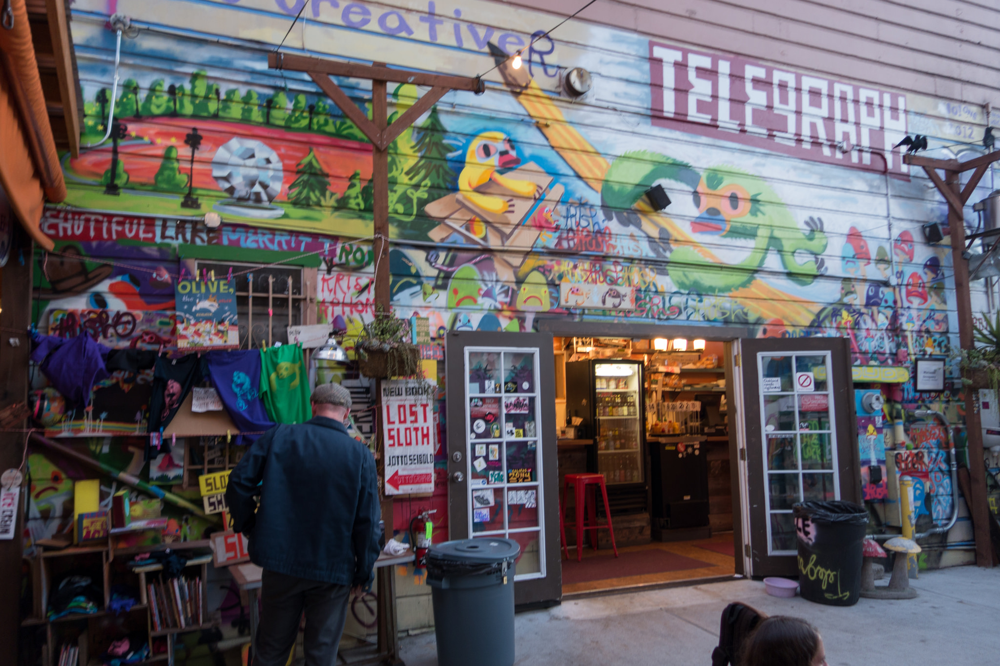
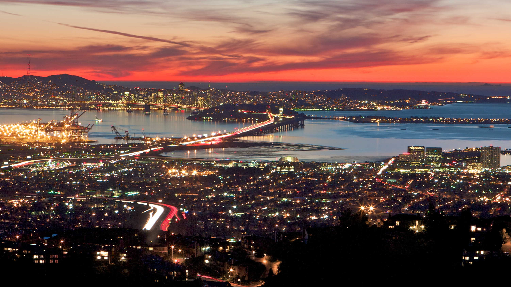
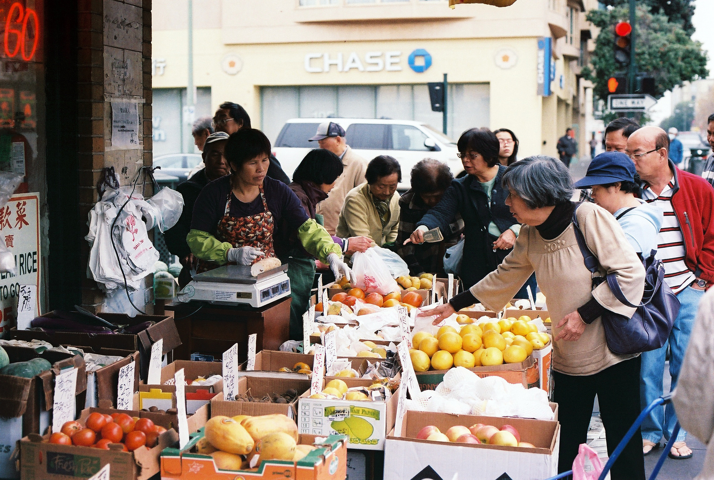
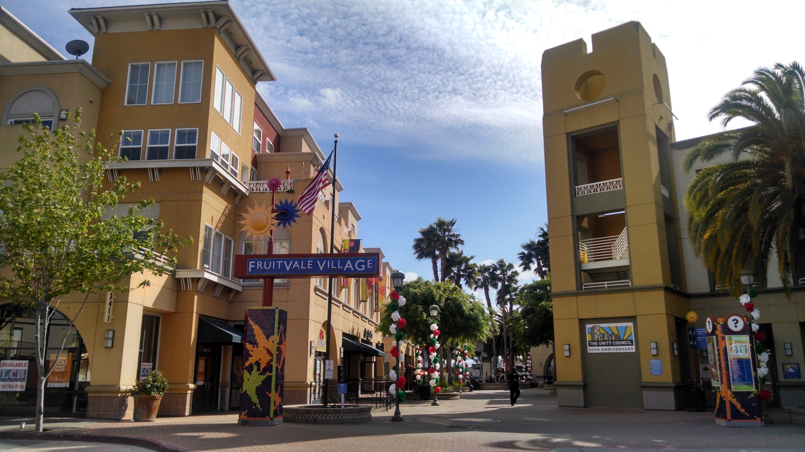
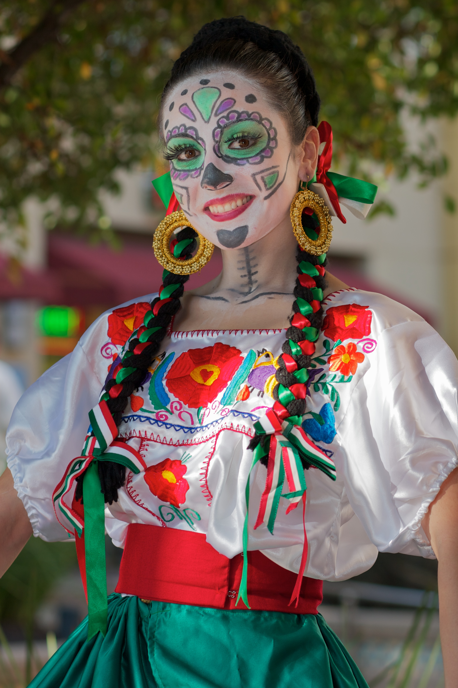

Destinations
North Oakland | West Oakland | Chinatown | Fruitvale

North Oakland
North Oakland is an area in Oakland, California, bordered by West Oakland, Downtown Oakland, Oakland Hills and the adjacent cities of Berkeley, Emeryville and Piedmont. Annexed to Oakland in 1897, it is known as the birthplace of the Black Panther Party and is the childhood home of both Dr. Huey P. Newton and Bobby Seale. It is also the birthplace and childhood home of Sue Draheim, internationally recognized fiddler.

West Oakland
West Oakland is a neighborhood situated in the northwestern corner of Oakland, California, along the waterfront near the Port of Oakland and the San Francisco Oakland Bay Bridge. It lies at an elevation of 13 feet (4 m). The population grew after 1863, when the San Francisco-Oakland railroad connected central Oakland to the San Francisco bay ferries. In 1869, West Oakland became the terminus of the transcontinental railroad, and the population grew again as railroad workers settled in the neighborhood.

Chinatown
The Chinatown neighborhood in Oakland, California, is a pan-Asian neighborhood which reflects Oakland's diverse Asian American community. It lies at an elevation of 39 feet (12 m). Oakland's Chinatown was first settled by Chinese immigrant gold miners in the 1800s. The earliest records of Chinese residents in Oakland date back to 1840, where laborers were employed in the Redwood Oaks Groves in the Oakland hills in the timber trade. Many others worked as sharecroppers, given legal regulations preventing Chinese settlers from owning land, By 1860, around 200 of Oakland's population of 1500 were of Chinese ethnicity.

Fruitvale
Fruitvale (formerly, Brays and Fruit Vale) is a neighborhood in east Oakland, California, in the United States. It is located about two miles southeast of Lake Merritt and is home to Oakland's largest Latino population, with Latinos comprising 49.5% of Fruitvale's population. It lies at an elevation of 49 feet (15 m). The name (originally Fruit Vale) comes from the many fruit orchards (largely apricot and cherry) which dominated the area in the late 19th century. After the 1906 earthquake, the onslaught of refugees from San Francisco caused a population boom, and the unincorporated neighborhood was annexed into the City of Oakland by 1909.
Community
